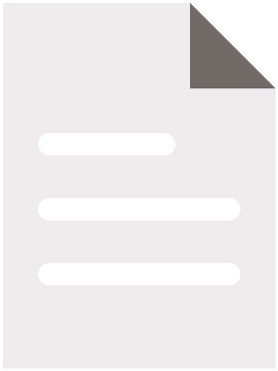

<!DOCTYPE html>
<html lang="en">
<head>
    <meta charset="UTF-8" />
    <meta http-equiv="X-UA-Compatible" content="IE=edge" />
    <meta name="viewport" content="width=device-width, initial-scale=1.0" />
    <title>John S. Rohal // Terminal</title>
    <link rel="icon" type="image/x-icon" href="./assets/favico.ico" />
    <link rel="preconnect" href="https://fonts.googleapis.com" />
    <link rel="preconnect" href="https://fonts.gstatic.com" crossorigin />
    <link href="https://fonts.googleapis.com/css2?family=Roboto:wght@300;400;500;700&family=Roboto+Mono:wght@400;500;700&display=swap" rel="stylesheet" />
    <link rel="stylesheet" href="styles.css?v=4" />
</head>
<body>
    <div class="scanlines"></div>
    <div class="crt-flicker"></div>

    <aside class="sidebar">
        <button class="nav-toggle" id="navToggle" aria-label="Toggle menu" aria-expanded="false">
            <span></span><span></span><span></span>
        </button>
        <div class="sidebar-header">
            <div class="prompt-line"><span class="prompt">//</span>
            <h1 class="sidebar-title">John S. Rohal</h1>
            <p class="sidebar-subtitle">// personal_portfolio.exe</p>
            <div class="social-row">
                <a href="www.linkedin.com/in/john-rohal" target="_blank" rel="noopener" class="social-link" title="linkedin">
                    
                </a>
                <a href="mailto:jr699122@ohio.edu" class="social-link" title="email">
                    
                </a>
                <a href="./assets/jsr_resume.pdf" download class="social-link" title="resume">
                    
                </a>
            </div>
        </div>
        <nav class="nav" id="navMenu">
            <ul>
                <li><a href="#home" class="nav-link active" data-target="home"><span class="bracket">[</span> 🏠︎ <span class="bracket">]</span> home</a></li>
                <li><a href="#about" class="nav-link" data-target="about"><span class="bracket">[</span> 🛈 <span class="bracket">]</span> about</a></li>
                <li><a href="#projects" class="nav-link" data-target="projects"><span class="bracket">[</span> 🌣 <span class="bracket">]</span> projects</a></li>
                <li><a href="#contact" class="nav-link" data-target="contact"><span class="bracket">[</span> ✉︎ <span class="bracket">]</span> contact</a></li>
            </ul>
        </nav>
        <div class="sidebar-footer">
            <div class="status-line">
                <span class="dot"></span> ONLINE
            </div>
            <div class="status-line muted">// session active</div>
        </div>
    </aside>

    <main class="terminal">
        <header class="terminal-bar">
            <div class="terminal-buttons">
                <span class="btn-circle"></span>
                <span class="btn-circle"></span>
                <span class="btn-circle"></span>
            </div>
            <div class="terminal-title">Welcome to My Portfolio: ~/<span id="title-section">home</span></div>
            <div class="terminal-meta">
                <div class="terminal-clock" id="clock">00:00:00</div>
                <div class="terminal-ip" id="loc">LOC: ---</div>
            </div>
        </header>

        <section id="home" class="screen active">
            <pre class="ascii">
          _____                   _______                   _____                    _____                            _____          
         /\    \                 /::\    \                 /\    \                  /\    \                          /\    \         
        /::\    \               /::::\    \               /::\____\                /::\____\                        /::\    \        
        \:::\    \             /::::::\    \             /:::/    /               /::::|   |                       /::::\    \       
         \:::\    \           /::::::::\    \           /:::/    /               /:::::|   |                      /::::::\    \      
          \:::\    \         /:::/~~\:::\    \         /:::/    /               /::::::|   |                     /:::/\:::\    \     
           \:::\    \       /:::/    \:::\    \       /:::/____/               /:::/|::|   |                    /:::/__\:::\    \    
           /::::\    \     /:::/    / \:::\    \     /::::\    \              /:::/ |::|   |                   /::::\   \:::\    \   
  _____   /::::::\    \   /:::/____/   \:::\____\   /::::::\    \   _____    /:::/  |::|   | _____            /::::::\   \:::\    \  
 /\    \ /:::/\:::\    \ |:::|    |     |:::|    | /:::/\:::\    \ /\    \  /:::/   |::|   |/\    \          /:::/\:::\   \:::\____\ 
/::\    /:::/  \:::\____\|:::|____|     |:::|    |/:::/  \:::\    /::\____\/:: /    |::|   /::\____\        /:::/  \:::\   \:::|    |
\:::\  /:::/    \::/    / \:::\    \   /:::/    / \::/    \:::\  /:::/    /\::/    /|::|  /:::/    /        \::/   |::::\  /:::|____|
 \:::\/:::/    / \/____/   \:::\    \ /:::/    /   \/____/ \:::\/:::/    /  \/____/ |::| /:::/    /          \/____|:::::\/:::/    / 
  \::::::/    /             \:::\    /:::/    /             \::::::/    /           |::|/:::/    /                 |:::::::::/    /  
   \::::/    /               \:::\__/:::/    /               \::::/    /            |::::::/    /                  |::|\::::/    /   
    \::/    /                 \::::::::/    /                /:::/    /             |:::::/    /                   |::| \::/____/    
     \/____/                   \::::::/    /                /:::/    /              |::::/    /                    |::|  ~|          
                                \::::/    /                /:::/    /               /:::/    /                     |::|   |          
                                 \::/____/                /:::/    /               /:::/    /                      \::|   |          
                                  ~~                      \::/    /                \::/    /                        \:|   |          
                                                           \/____/                  \/____/                          \|___|          
                                                                                                                                     
            </pre>
            <p class="line">> BIOS v1.1.0.4 ...</p>
            <p class="line">> mounting filesystem <span class="ok">[OK]</span></p>
            <p class="line">> starting system clock <span class="ok">[SYNCHRONIZED]</span></p>
            <p class="line">> initializing memory ... <span class="accent">[##########]</span> <span class="accent">100%</span>
            <p class="line">&nbsp;</p>
            <h2 class="hello">Hello, I'm <span class="accent">John S. Rohal</span>.</h2>
            <p class="role">Engineer // Developer // Creator</p>
            <div class="cta-row">
                <a class="btn" href="./assets/jsr_resume.pdf" target="_blank">./resume.pdf</a>
                <a class="btn" href="#contact" data-target="contact">./contact</a>
            </div>
        </section>

        <section id="about" class="screen">
            <p class="cmd"><span class="prompt">root@izaak</span>:<span class="path">~</span>$ cat about.txt</p>
            <h2 class="section-title">// ABOUT_ME</h2>
            <p class="paragraph">
                I am a Computer Scientist from Cincinnati, Ohio, and a recent graduate eager to keep learning
                and building. My fascination with computers started on the hardware side — I built my first
                PC at 15 and still love tinkering with electronics — and grew into a love of programming
                through high-school classes in Java and C++.
            </p>
            <p class="paragraph">
                In college I leaned into computer science and now code across the stack, mainly in Python, C++ and
                JS/React. As a hardware security researcher I wrote C++ kernels, got comfortable with
                GitHub, Linux, and PyMTL3 (a Python-based HDL similar to Verilog), and dug into CGRA
                architectures.
            </p>
            <p class="paragraph">
                My senior year I had the opportunity to work on a team of 4 of my peers to build a continuous training
                 pipeline for vehicle features for a company called Skycop. The pipeline was built on AWS, utilizing 
                 Lambdas, Step Functions, EventBridge notifications, and many SageMaker AI tools. We trained 5 models to 
                 identify various vehicle-related features, and our state recognition model was 50% more accurate 
                 than their previous model, improving from ~60% accuracy to 90%+! I learned a lot from that experience,
                 especially in AWS, but I also learned how to work on a team and meet deadlines effectively.
            </p>
            <p class="paragraph">
                I work well on teams, communicate clearly, and pick up new tools quickly — I'm always
                looking for the next thing to learn.
            </p>

            <div class="info-grid">
                <div class="info-card">
                    <h3>// EXPERIENCE</h3>
                    <p>Hardware Security Research Assistant <br/>@ Ohio University</p>
        
                    <p>SWE Intern @ SkyCop</p>
                </div>
                <div class="info-card">
                    <h3>// EDUCATION</h3>
                    <p>B.Sc. Computer Science <3.89/4.0></3.89></p>
                    <p>Cyber-Security Management Cert.</p>
                </div>
                <div class="info-card">
                    <h3>// LOCATION</h3>
                    <p>Cincinnati, OH</p>
                    <p>// open to relocate</p>
                </div>
            </div>
        </section>

        <section id="skills" class="screen">
            <p class="cmd"><span class="prompt">root@izaak</span>:<span class="path">~</span>$ ls ./skills</p>
            <h2 class="section-title">// SKILLS</h2>

            <div class="skills-grid">
                <div class="skill-block">
                    <h3>&gt; frontend</h3>
                    <ul class="tag-list">
                        <li>HTML</li>
                        <li>CSS</li>
                        <li>JavaScript</li>
                        <li>TypeScript</li>
                        <li>React</li>
                        <li>Next.js</li>
                        <li>Tailwind</li>
                        <li>Figma</li>
                    </ul>
                </div>
                <div class="skill-block">
                    <h3>&gt; backend &amp; cloud</h3>
                    <ul class="tag-list">
                        <li>C / C++</li>
                        <li>Python</li>
                        <li>Java</li>
                        <li>Node.js</li>
                        <li>Express</li>
                        <li>SQL</li>
                        <li>AWS</li>
                        <li>Docker</li>
                        <li>Linux</li>
                        <li>Bash</li>
                        <li>Git</li>
                    </ul>
                </div>
                <div class="skill-block">
                    <h3>&gt; hardware &amp; systems</h3>
                    <ul class="tag-list">
                        <li>SystemVerilog</li>
                        <li>PyMTL3</li>
                        <li>Verilator</li>
                        <li>Vivado</li>
                        <li>Arduino</li>
                        <li>OpenMPI</li>
                        <li>Cython</li>
                        <li>Flex / Bison</li>
                    </ul>
                </div>
            </div>
        </section>

        <section id="projects" class="screen">
            <p class="cmd"><span class="prompt">root@izaak</span>:<span class="path">~</span>$ ls -la ./projects</p>
            <h2 class="section-title">// PROJECTS</h2>

            <div class="projects-grid">
                <article class="project-card">
                    <h3>&gt; job_application_tracker</h3>
                    <p>A self-hosted job-search dashboard built with Node.js / Express and vanilla JS.
                       Connects to a Google Sheet (via CSV export) or an uploaded .xlsx / .csv, normalizes
                       free-form application statuses into a fixed funnel, and computes response, interview,
                       and offer rates. Ships a downloadable spreadsheet template and a no-API-key setup flow.</p>
                </article>
                <article class="project-card">
                    <h3>&gt; guardian_state_recognizer</h3>
                    <p>An end-to-end AWS data + ML pipeline for driver-state recognition. CDK-deployed Lambda
                       triggered by S3 uploads; streams gzipped JSONL line-by-line to keep memory low,
                       validates and splits into 90/10 train/test (plus validation), and writes a manifest
                       for downstream SageMaker training of a YOLOv8 model.</p>
                </article>
                <article class="project-card">
                    <h3>&gt; cancer_predictor</h3>
                    <p>An ID3-style decision tree classifier built from scratch in Python to predict cancer
                       vs. non-cancer samples from gene-mutation data. Handles class imbalance via
                       oversampling and accelerates the entropy / information-gain hot path with a Cython
                       extension compiled with -O3 / -march=native.</p>
                </article>
                <article class="project-card">
                    <h3>&gt; cgra_hw_security_research</h3>
                    <p>Research on Coarse-Grained Reconfigurable Architectures using CGRA-Flow, VectorCGRA,
                       Garnet, and PyMTL3. Wrote C++ kernels, mapped them onto reconfigurable fabrics, and
                       investigated a published CVE — including a CGRA-based secure cache check against
                       timing attacks.</p>
                </article>
                <article class="project-card">
                    <h3>&gt; systemverilog_cpu</h3>
                    <p>A single-cycle MIPS-style CPU implemented in SystemVerilog with a full datapath and
                       control unit: PC, instruction memory, register file, ALU, sign-extension, branch /
                       jump logic, and data memory. Verified end-to-end with Verilator and custom
                       testbenches.</p>
                </article>
                <article class="project-card">
                    <h3>&gt; parallel_hash_cracker</h3>
                    <p>A distributed SHA-256 password cracker written in C with OpenMPI. Splits the password
                       search space across MPI ranks, broadcasts the salt and target hash, and uses
                       early-termination messaging so the first rank to find a match short-circuits the
                       cluster.</p>
                </article>
                <article class="project-card">
                    <h3>&gt; custom_bash_shell</h3>
                    <p>A Unix shell in C++ with a Flex scanner and Bison parser. Builds a linked list of
                       command structs supporting argument parsing, I/O redirection (including append for
                       stdout/stderr), and pipelines, then executes them with fork/exec.</p>
                </article>
                <article class="project-card">
                    <h3>&gt; wordle_clone</h3>
                    <p>A full-stack Wordle clone built with a team using JavaScript, React, Node, Tailwind,
                       and Supabase. Practiced collaborative GitHub workflows; produced UML diagrams and
                       Jest unit tests; shipped extra pages and minigames; wrote a solver algorithm that
                       cracks Wordle puzzles automatically.</p>
                </article>
                <article class="project-card">
                    <h3>&gt; spotify_karaoke_app</h3>
                    <p>A full-stack web app letting users log in with Spotify, play songs, and follow along
                       with synchronized lyrics. Spotify Web API for OAuth 2.0, playlist retrieval, and
                       real-time playback, plus a Lyric Finder API and Album Cover API. React front-end
                       with React Router and hooks; Node.js / Express back-end.</p>
                </article>
                <article class="project-card">
                    <h3>&gt; arduino_rtc_led_sign</h3>
                    <p>A standalone clock + message display built around an Arduino paired with an RTC
                       module for accurate timekeeping across power cycles, driving an LED matrix sign for
                       the readout. Firmware in C/C++, I2C with the RTC, and managed display refresh and
                       scrolling text.</p>
                </article>
            </div>
        </section>

        <section id="contact" class="screen">
            <p class="cmd"><span class="prompt">root@izaak</span>:<span class="path">~</span>$ cat contact.json</p>
            <h2 class="section-title">// CONTACT</h2>
            <pre class="contact-json">
{
  "name":     "Izaak W. White",
  "email":    "<a href='mailto:izaak.w.white@gmail.com'>izaak.w.white@gmail.com</a>",
  "linkedin": "<a href='https://www.linkedin.com/in/izaak-white-994319266/' target='_blank'>linkedin.com/in/izaak-white</a>",
  "github":   "<a href='https://github.com/izaakwhite' target='_blank'>github.com/izaakwhite</a>",
  "status":   "open to opportunities"
}
            </pre>
            <p class="line">> awaiting transmission<span class="cursor"></span></p>
        </section>

        <section id="mips" class="screen">
            <p class="cmd"><span class="prompt">root@izaak</span>:<span class="path">~</span>$ ./mips_cpu</p>
            <h2 class="section-title">// MIPS_CPU</h2>

            <div class="mips-toolbar">
                <select id="mips-sample" class="mips-select" title="load sample program"></select>
                <button class="btn mips-btn" id="mips-assemble">./assemble</button>
                <button class="btn mips-btn" id="mips-step">./step</button>
                <button class="btn mips-btn" id="mips-run">./run</button>
                <button class="btn mips-btn" id="mips-reset">./reset</button>
            </div>

            <div class="mips-grid">
                <div class="mips-editor-pane">
                    <div class="pane-label">// editor — main.s</div>
                    <textarea id="mips-source" class="mips-source" spellcheck="false" autocomplete="off"></textarea>
                </div>

                <div class="mips-side">
                    <div class="mips-pane">
                        <div class="pane-label">// registers <span class="pane-pc" id="mips-pc">PC = 0x00400000</span></div>
                        <div class="mips-regs" id="mips-regs"></div>
                    </div>

                    <div class="mips-pane">
                        <div class="pane-label">// console <span class="pane-pc" id="mips-status">idle</span></div>
                        <pre class="mips-console" id="mips-console"></pre>
                    </div>

                    <div class="mips-pane">
                        <div class="pane-label">// data memory</div>
                        <pre class="mips-memory" id="mips-memory"></pre>
                    </div>
                </div>
            </div>
        </section>

        <section id="wordle" class="screen">
            <p class="cmd"><span class="prompt">root@izaak</span>:<span class="path">~</span>$ ./wordle --random</p>
            <h2 class="section-title">// WORDLE</h2>

            <div class="wordle-info">
                <p class="line">guess the 5-letter word in 6 tries.</p>
                <p class="line"><span class="ok">█</span> letter is in the word and in the right spot. &nbsp; <span style="color:var(--amber)">█</span> in the word, wrong spot. &nbsp; <span style="color:var(--text-dim)">█</span> not in the word.</p>
                <p class="line"><span id="wordle-status">word loaded // type to begin</span></p>
            </div>

            <div class="wordle-board" id="wordle-board"></div>

            <div class="wordle-keyboard" id="wordle-keyboard"></div>

            <div class="wordle-controls">
                <button class="btn" id="wordle-reset">./new_word</button>
            </div>
        </section>

        <section id="game" class="screen">
            <p class="cmd"><span class="prompt">root@izaak</span>:<span class="path">~</span>$ ./invaders.exe</p>
            <h2 class="section-title">// SPACE_INVADERS</h2>

            <div class="game-hud">
                <div class="hud-cell"><span class="hud-label">SCORE</span><span class="hud-val" id="hud-score">0000</span></div>
                <div class="hud-cell"><span class="hud-label">HI</span><span class="hud-val" id="hud-hi">0000</span></div>
                <div class="hud-cell"><span class="hud-label">LIVES</span><span class="hud-val" id="hud-lives">3</span></div>
                <div class="hud-cell"><span class="hud-label">WAVE</span><span class="hud-val" id="hud-wave">1</span></div>
            </div>

            <div class="game-frame">
                <canvas id="game-canvas" width="700" height="480"></canvas>
                <div class="game-overlay" id="game-overlay">
                    <div class="overlay-inner">
                        <h3 id="overlay-title">&gt; INSERT_COIN</h3>
                        <p id="overlay-sub">defend the terminal // press <span class="accent">SPACE</span> or tap to start</p>
                        <p class="overlay-controls">
                            <span class="key">&larr;</span> <span class="key">&rarr;</span> move
                            &nbsp; &nbsp;
                            <span class="key">SPACE</span> fire
                            &nbsp; &nbsp;
                            <span class="key">P</span> pause
                            &nbsp; &nbsp;
                            <span class="key">R</span> restart
                        </p>
                        <p class="overlay-controls touch-hint">on touch: drag to move &middot; tap to fire</p>
                    </div>
                </div>
            </div>

            <div class="game-controls">
                <button class="btn mips-btn" id="game-pause">&#10073;&#10073; pause</button>
                <button class="btn mips-btn" id="game-restart">&#8635; restart</button>
            </div>
        </section>
    </main>

    <script src="./assets/wordlist.js"></script>
    <script src="script.js?v=4"></script>
    <script src="game.js?v=4"></script>
    <script src="wordle.js"></script>
    <script src="mips.js"></script>
</body>
</html>
